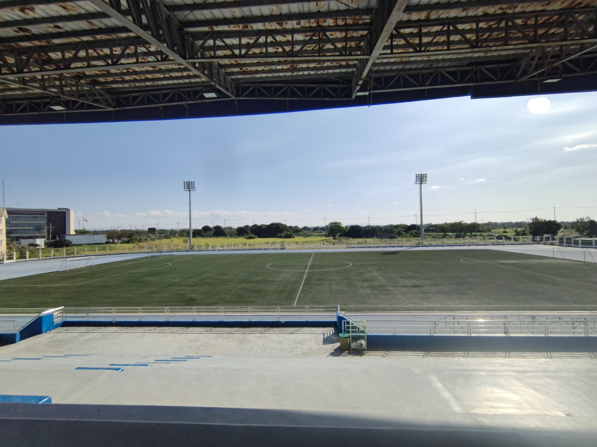

Hello! My name is Adrianne Villar. I am a Grade 11 student who is currently studying HTML, CSS, and JavaScript.
I started learning coding because I was curious about how websites are created and how they work behind the scenes.
At first, I found it difficult, especially understanding how functions and logic work, but as I continued practicing,
I began to enjoy solving problems and creating my own projects.
I am still a beginner, but I am willing to learn more and improve my skills in web development.
My goal is to become better at coding and create more interactive and creative websites in the future.
My Hobbies

sports (soccer⚽)
One of my favorite hobbies is playing football (soccer). It helps me relax, reduce stress, and improve my physical health.
Playing sports also teaches me teamwork, discipline, and perseverance.
Coding 💻
Another hobby of mine is coding. Even though it can be challenging at times, I enjoy learning new concepts and building simple programs.
Coding allows me to be creative and think logically at the same time.
In my free time, I also enjoy watching videos, exploring new technologies, and learning new things that can improve my skills.
My Skills
I have basic knowledge in HTML, CSS, and JavaScript.
I can create simple websites, design layouts, and add basic interactivity using JavaScript.
I am also learning how to debug errors and improve my problem-solving skills.
My Goals
My goal is to become a skilled web developer in the future.
I want to improve my coding skills, learn more programming languages,
and create websites that are useful and creative.
I also want to gain more experience by building projects and continuously practicing.
.jpeg)
.jpeg)